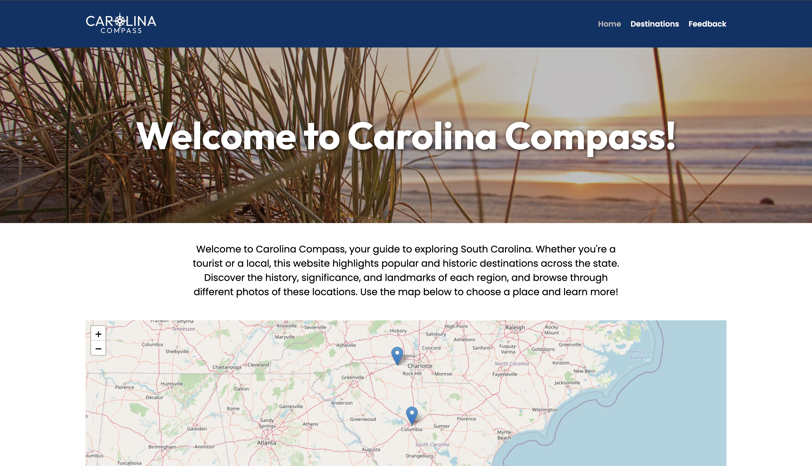
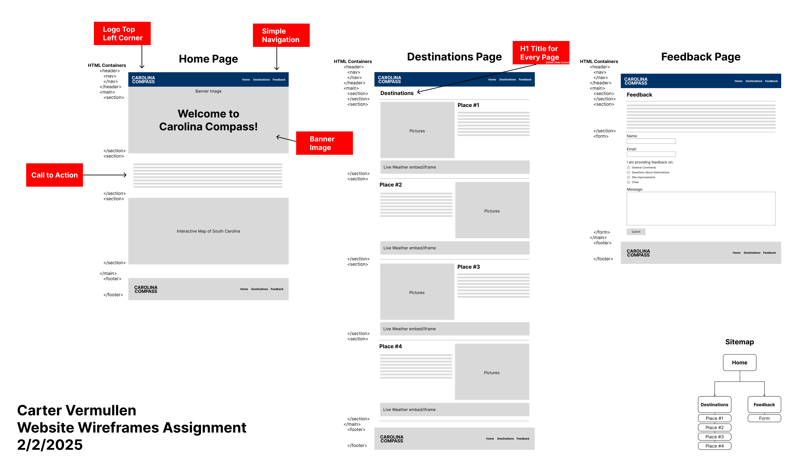
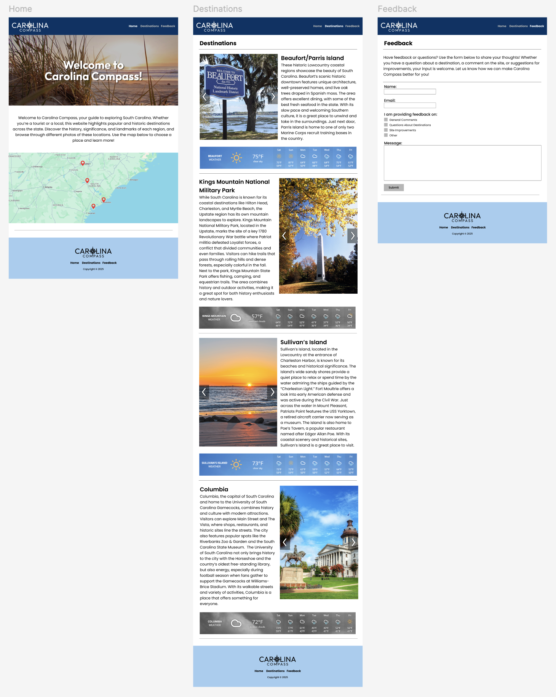
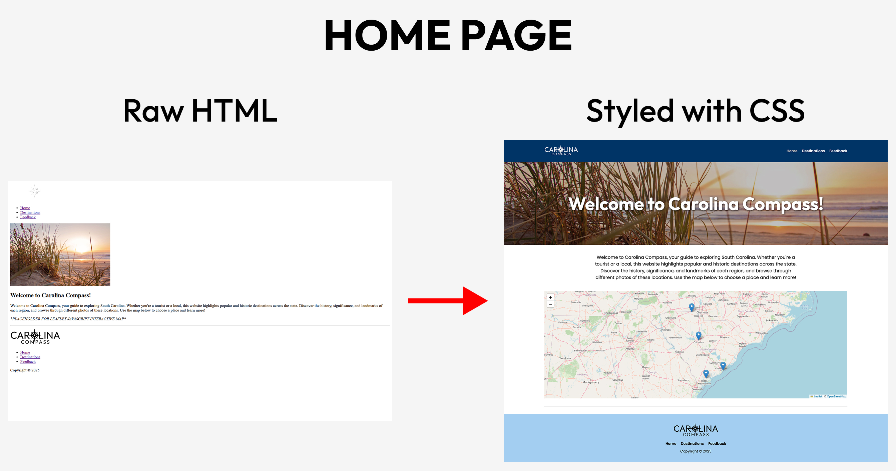
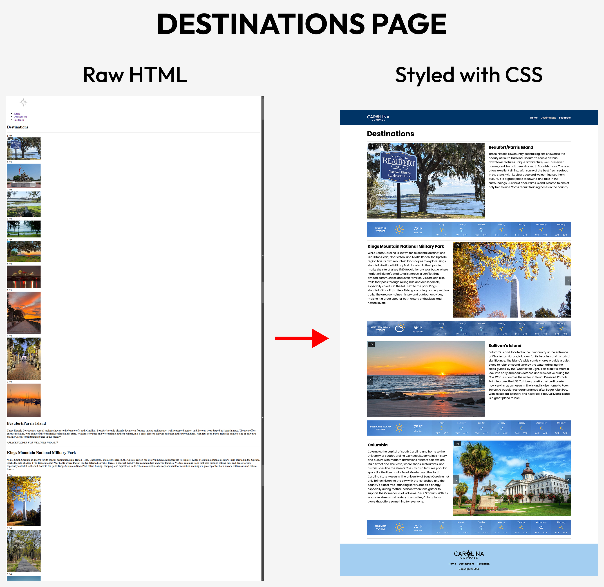
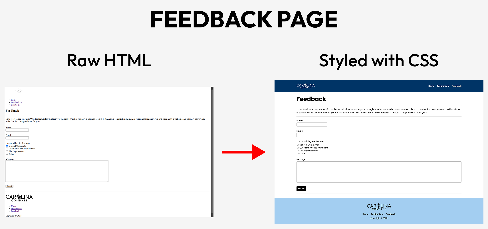

Carolina Compass Homepage (Final Version)

Designed and deployed a fully functional multi-page website showcasing popular South Carolina travel destinations using HTML, CSS, and JavaScript.
This project features the design and development of Carolina Compass, a multi-page travel website created for the Web Systems (ITEC 362) course. The site highlights popular destinations across South Carolina and was built using HTML, CSS, and JavaScript, with interactive elements such as a Leaflet map, image slideshows, and a feedback form.
A WordPress CMS version was also developed beforehand to compare static and dynamic site creation, with both versions designed to maintain a consistent appearance within platform limitations. The website follows best practices in web development, including accessibility testing, performance optimization, and responsive design. It was planned and prototyped in Figma, validated for HTML and CSS compliance, and enhanced with SEO and Google Analytics integration. Please note that this site was primarily created for desktop viewing and is not fully optimized for mobile devices.
Throughout the development process, I focused on maintaining a clean layout, semantic structure, and consistent styling through external CSS. I used Wave and Google Lighthouse to evaluate accessibility and performance, resolving issues with color contrast, labels, and load times. Replacing images with optimized .webp files significantly improved the site's performance score. I also applied usability feedback from survey responses, refining layout spacing, form design, and alignment. One of the main challenges I encountered was debugging the JavaScript slideshow within a flexbox layout, which I resolved through AI-assisted troubleshooting.
This project demonstrates strong front-end development skills, usability testing, and version control experience with GitHub. Beyond technical development, it reinforced the importance of planning structure before coding, writing organized markup, and applying accessibility standards early in the design process. Implementing APIs, JavaScript functionality, and performance tools expanded my understanding of modern web workflows. Carolina Compass showcases both creativity and technical ability, earning a perfect score for excellence across all rubric categories.





